Localization guided speech separation

Sunit Sivasankaran
sunit.sivasankaran@inria.fr
About me { Green: Industry | Black: Academia }
2003-07 : Telecommunication Engineering, B.E,
RVCE,
India
(Best Project Award)
2007-10 : Software Developer,
NDS (now Cisco),
Bangalore, India
2011-13 : EE, MS by Research,
Indian Institute of Technology-Madras,
Chennai, India
Supervised by: (Late) Prof. KMM Prabhu & Prof. S Umesh
2014-15 : Lead Engineering,
Samsung Research Institute,
Bangalore, India
2015-16 : Engineer,
Inria-Nancy,
France
(4th position in CHiME-3)
2017 : Research Intern,
Microsoft Research,
Bangalore, India
2017- : PhD Candidate,
Inria-Nancy & Université de Lorraine,
France
Supervised by: Dr. Emmanuel Vincent & Dr. Dominique Fohr
2019 : Sixth Frederick Jelinek Memorial Summer Workshop (JSALT),
JHU,
ETS-Montreal
Related Work
Multichannel Signals
Speaker Localization
- Sivasankaran. S, Vincent. E, Fohr, D., (2018) "Keyword-based speaker localization: Localizing a target speaker in a multi-speaker environment", Interspeech
Multichannel speech separation
- Sivasankaran. S, Vincent. E, Fohr, D., (2020) "SLOGD: Speaker Location Guided Deflation Approach to Speech Separation", ICASSP
- Sivasankaran. S, Vincent. E, Fohr, D., "Analyzing the impact of speaker localization errors on speech separation for automatic speech recognition", arXiv:1910.11114
Automatic Speech Recognition
- Sivasankaran. S, et. al., (2015) "Robust ASR using neural network based speech enhancement and feature simulation", ASRU
- Sivasankaran. S, et. al. (2017), "Discriminative importance weighting of augmented training data for acoustic model", ICASSP
- Sivasankaran. S, et. al., (2017) "A combined evaluation of established and new approaches for speech recognition in varied reverberation conditions", Computer Speech & Language
- Sivasankaran. S, et. al. (2018) "Phone Merging for code-switched Speech Recognition", linguistic code-switching workshop in ACL
Sound Classification
- Sunit Sivasankaran and K. M. M. Prabhu, (2013) "Robust features for environmental sound classification", CONECCT
Today's Talk
Multichannel Signals
Speaker Localization
- Sivasankaran. S, Vincent. E, Fohr, D., (2018) "Keyword-based speaker localization: Localizing a target speaker in a multi-speaker environment", Interspeech
Multichannel speech separation
- Sivasankaran. S, Vincent. E, Fohr, D., (2020) "SLOGD: Speaker Location Guided Deflation Approach to Speech Separation", ICASSP
- Sivasankaran. S, Vincent. E, Fohr, D., "Analyzing the impact of speaker localization errors on speech separation for automatic speech recognition", arXiv:1910.11114
Work funded by ANR VocADom
ANR VocADom pipeline
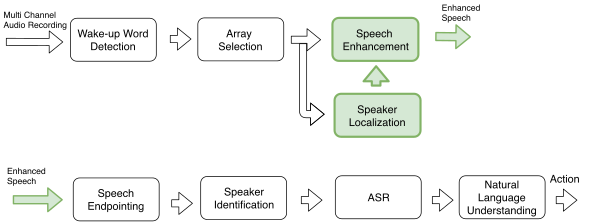- Far-field ASR to control home devices
- Multiple microphone arrays across room
- Focus is on localization and speech separation
Problem overview
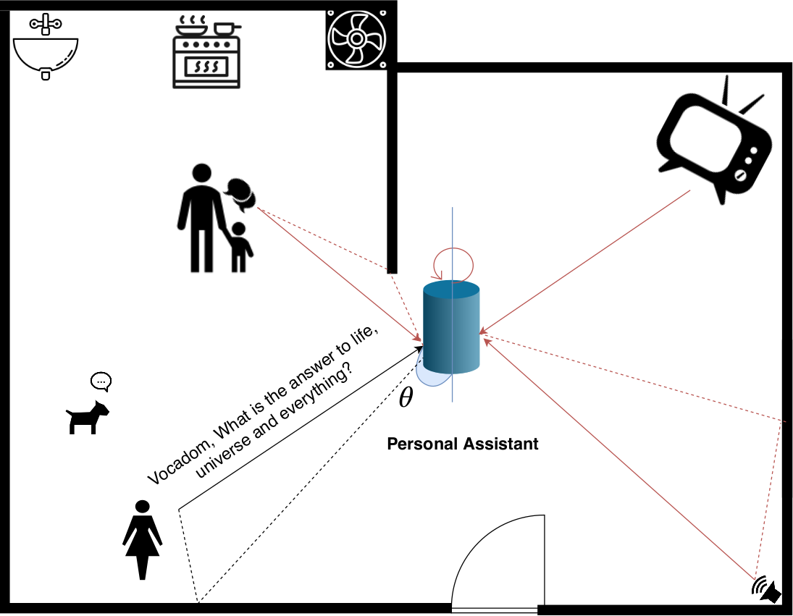
Sources of noise in a typical home
- Three main adversaries $\rightarrow~~~ $ Noise
- Interfering speech is non-stationary
- Impact performance of speech enabled devices like Alexa
- Multiple evaluation campaigns $\rightarrow~~~ $ REVERB (Reverberations)
$\rightarrow~~~ $ Reverberations
$\rightarrow~~~ $ Interfering Speech
$\rightarrow~~~ $ CHiME 1-4 (Reverb+Noise)
$\rightarrow~~~ $ CHiME 5,6 (Cocktail party)
Problem overview
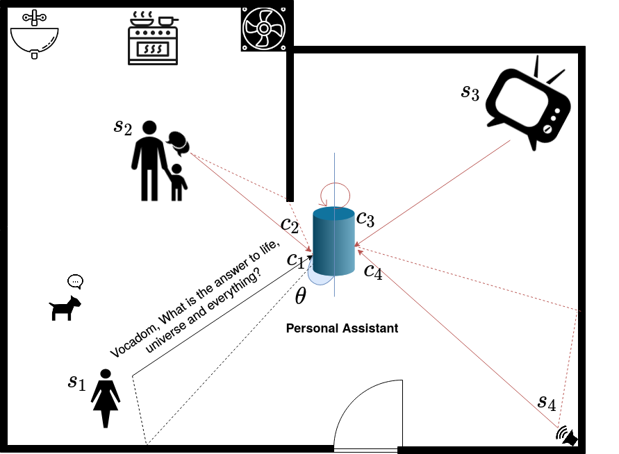
Signal mixing model
$$
\mathbf{c}_j(t) = \mathbf{a}_j(t) \star s_j(t),\quad
$$
$\mathbf{a}_j \text{ is the room impulse response (RIR)}$
Overview of the talk
Part I: Speaker Localization
$$ \hat{\theta} = \arg\max_{\theta}p(\theta| \mathbf{x})$$Part II: Speech separation
$$ \hat{\mathbf{c}_j} = \mathbb{E}\{\mathbf{c}_j|\hat{\theta}, \mathbf{x}\} $$Part I: Speaker Localization
Overview of speaker localization
Done in time-frequency domain (Short-time Fourier Transform in this work)
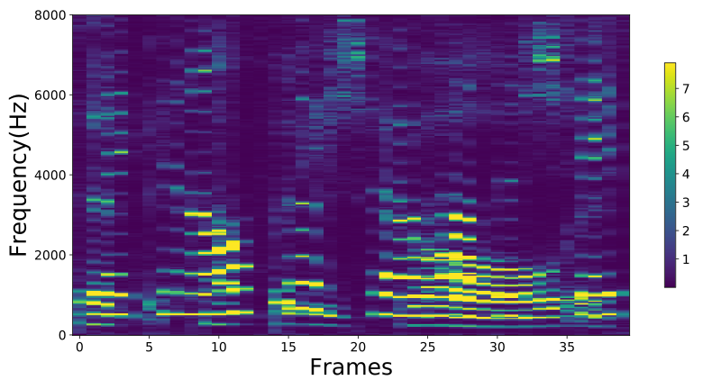
$$
\begin{aligned}
\mathbf{x}(t)& = \sum_{j=1}^J \mathbf{a}_j(t) \star s_j(t) \\
\mathbf{x}(n,f) &= \mathbf{A}(n,f) \mathbf{s}(n,f)
\end{aligned}
$$
with narrowband approximation
$$
\begin{aligned}
\mathbf{A}(n,f) &= [\mathbf{a}_1(n,f), ..., \mathbf{a}_J(n,f)]
\end{aligned}
$$
$$
\mathbf{A}(n,f) = \mathbf{A}(f)
$$
If source and microphone are not moving
Based on interchannel time difference, level difference
- Angular Spectrum: Acoustic map by integrating clues over time-frequency plane
- Clustering Approaches: Iteratively estimate time-frequency mask & DOA of source
- Sub-space methods: Compressive sensing based approaches
- Learning based methods: Build models to learn the acoustic space
Generalized Cross Correlation with PHAse Transform (GCC-PHAT)
Compute the weighted cross-correlation between signals at two microphones
$$ \begin{aligned} \mathbf{R}_{\mathbf{x}_{i}\mathbf{x}_{i'}}(n,k) &= \sum_f \frac{\mathbf{x}_{i}(n,f) \mathbf{x}_{i'}^H(n,f)}{|\mathbf{x}_{i}(n,f)||\mathbf{x}_{i'}(n,f)|} e^{j2\pi fk} \end{aligned} $$- Knapp, C. and Carter, G. (1976) The generalized correlation method for estimation of time delay. TASSP
- Evers, C., et. al, (2020) The LOCATA challenge: Acoustic source localization and tracking. TASLP (Submitted)
Generalized Cross Correlation with PHAse Transform (GCC-PHAT)
Compute the weighted cross-correlation between signals at two microphones
$$ \begin{aligned} \mathbf{R}_{\mathbf{x}_{i}\mathbf{x}_{i'}}(n,k) &= \sum_f \frac{\mathbf{x}_{i}(n,f) \mathbf{x}_{i'}^H(n,f)}{|\mathbf{x}_{i}(n,f)||\mathbf{x}_{i'}(n,f)|} e^{j2\pi fk} \end{aligned} $$- Knapp, C. and Carter, G. (1976) The generalized correlation method for estimation of time delay. TASSP
- Evers, C., et. al, (2020) The LOCATA challenge: Acoustic source localization and tracking. TASLP (Submitted)
Product of phase difference and sinusoids
$$ \mathbf{R}_{\mathbf{x}_{i}\mathbf{x}_{i'}}(n,k) = \sum_f e^{j \Delta (\phi(n,f))} e^{j2\pi fk} \quad \text{where } \quad e^{j\Delta(\phi(n,f))} = \frac{\mathbf{x}_{i}(n,f) \mathbf{x}_{i'}^H(n,f)}{|\mathbf{x}_{i}(n,f)||\mathbf{x}_{i'}(n,f)|} $$Can be written as product of two matrices
$$
\mathbf{R}_{\mathbf{x}_{i}\mathbf{x}_{i'}}(n,k) = \psi(n) \mathbf{\Xi}(k)
$$
$\psi(n) = [e^{j \Delta (\phi(n,0))}, ..., e^{j \Delta (\phi(n,F))}] \rightarrow$ cosine-sine interchannel phase difference (CSIPD)
$\mathbf{\Xi}(k) = [e^{j2\pi f_1 k}, ..., e^{j2\pi F k}] \rightarrow$ sinusoidal subspace
Generalized Cross Correlation with PHAse Transform (GCC-PHAT) with 2-speakers
Approach
Want to localize the speaker who uttered the keyword $\rightarrow$ New Task
In comparison with respect to other work:
- Localize one particular speaker in a mixture, not all
- Localizing a specific speaker will need further (error-prone) post-processing
How to use a keyword to improve localization?
- Keywords are generally of short duration: $[0.5, 1]$ sec
- Localization is computed using signals, what has text got to do with it?
Approach
Estimate time-frequency bins dominated by the target speaker
Mixture spectrogram
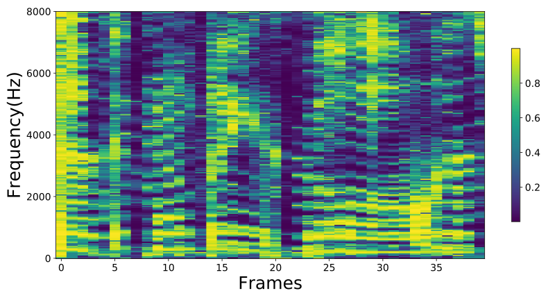
Mask for target speaker, $\mathcal{M}$
Using text for localization
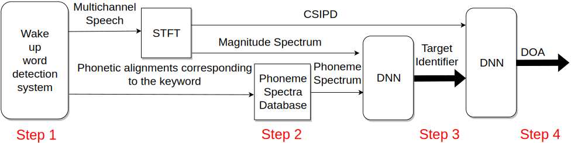STEP 1: Wake-up word detection
STEP 2: Obtain the corresponding spectrogram, a.k.a. phone spectrum
STEP 3: Estimate target mask
STEP 4: CSIPD $\times$ target mask ⇒ [DNN] ⇒ DOA
STEP 1: Wake-up word detection
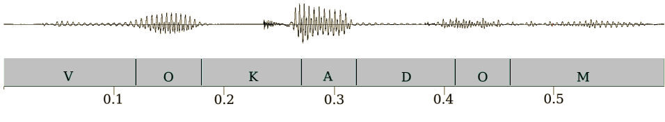- Keyword and alignment found by wake-up word detection system
- Hidden Markov Model-Gaussian Mixture Model system used to obtain alignments in this work
STEP 2: Phone spectra database
- Pre-computed by averaging magnitude spectra per phone
- Distinct patterns are observed for every phone
- Pick spectrum corresponding to the aligned phone
- Erdogan, H., Hershey, J. R., Watanabe, S., and Le Roux, J. (2015). Phase-sensitive and recognition-boosted speech separation using deep recurrent neural networks. In ICASSP
Estimating target masks
Estimating target masks
Mixture spectra
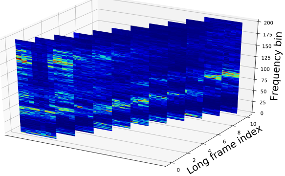Phonetic spectra
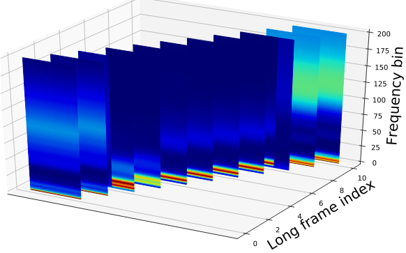Estimating target masks
STEP 4: DOA Estimation Network
Data for training
Generating Room Impulse Responses (RIR)
- Discretize DOA space into $1^\circ$ classes ⇒ $181$ classes
- RT60 $\in [0.3, 1.0]$ s, speaker mic distance $\in [0.5 - 5.5]$ m
- Distance between microphones = $10$ cms
- $1.5$ M RIRs for training
- RIR simulated using RIR-Simulator
- Habets, E.A.P. "Room impulse response (RIR) generator." https://github.com/ehabets/RIR-Generator
Features
- Speech signals from Librispeech
- $0.5$ s segments of speech are used for localization
- Signal-to-Interference ratio (SIR) $[0, 10]$ dB
- Real ambient noise for test at SNR $[0, 30]$ dB
Metrics (low value $\Rightarrow$ better system)
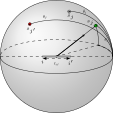
Gross Error Rate
$\%$ of estimated DOAs above a error tolerance, $\tau=5^\circ$ $\frac{\#|\theta_j - \hat{\theta}_j| > \tau}{\#\text{samples}}$Interference Closeness Rate
$\%$ of estimated DOAs which are close ($\le 5^\circ$) to the interference DOA $\frac{\#|\hat{\theta}_j - \theta_{j'}| \le \tau}{\#\text{samples}}$Mean Absolute Error (MAE)
Mean of the absolute error with respect to Target DOA (in degrees) $\frac{\sum_{\forall \text{samples}}|\hat{\theta}_j - \theta_j|}{\#\text{samples}} $Results on simulated data
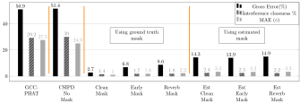- Target mask helps in identifying the target
- Estimated mask has low interference closeness rate
- Early mask gave the best performance
Recording real data
- Data was recorded using an array of 4 microphone in French
- Models retrained using Ester dataset
-
Thanks to my awesome colleagues - Elodie Gauthier, Manuel Pariente, Nicholas Furnon, Nicholas Turpault - for helping out with the recording!
Result on real data - Two speaker
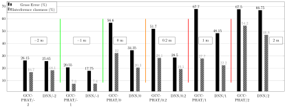- Green Block: Target closer to microphone compared to Interference
- Orange Block: Target and Interference are equidistant
- Red Block: Target farther to microphone compared to Interference
Conclusion : Speaker localization
- Proposed methods to incorporate text into speaker localization pipeline
- Masks can be used as target identifiers
-
Other observations: Fricative phones are better for localization and plosive sounds are the worst
Phone CH_I CH_B Z_B SH_B NG_E N_E M_E B_B Error rate 1.5 1.6 1.8 1.8 19.4 21.1 21.3 24.5
An ideal keyword: Cheeeezzzzz!
Part II: Speech separation
Approaches to speech separation
- Computational auditory scene analysis frameworks $\rightarrow~~~ $ Imitate human hearing
- Non-negative matrix factorization $\rightarrow~~~ $ Learn non-negative subspaces and find linear combinations that best describe the speaker
- DNN based methods in time-frequency domain $\rightarrow~~~ $ Compute masks for each speaker using DNNs. Ex: Deep Clustering, u-PIT
- Hershey, J. R., Chen, Z., Le Roux, J., and Watanabe, S. (2016). Deep clustering: Discriminative embeddings for segmentation and separation. In ICASSP
- Chen, Z., Luo, Y., and Mesgarani, N. (2017). Deep attractor network for single-microphone speaker separation. In ICASSP
- Kolbaek, M., Yu, D., Tan, Z.-H., and Jensen, J. (2017). Multitalker speech separation with utterance-level permutation invariant training of deep recurrent neural networks. In TASLP
- DNN based methods from raw waveform $\rightarrow~~~ $ Learn encoder, decoder and masker. Ex: Conv-Tasnet
- Luo, Y. and Mesgarani, N. (2019). Conv-TasNet: Surpassing ideal time-frequency magnitude masking for speech separation. TASLP
- Using speaker identity
- Du, J., Tu, Y. H., Sun, L., Ma, F., Wang, H. K., et. al. (2016). The USTC-iFlytek system for CHiME-5 challenge. Proc. CHiME-5
- Implicity use of speaker location : Phase difference between microphone pairs
- Wang, Z. and Wang, D. (2019). Combining spectral and spatial features for deep learning based blind speaker separation, TASLP
- Explicit use of speaker location : TDOA/DOA
- Perotin, L., Serizel, R., Vincent, E., and Guérin, A. (2018). Multichannel speech separation with recurrent neural networks from high-order ambisonics recordings. In ICASSP
- Chen, Z., Xiao, X., Yoshioka, T., Erdogan, H., Li, J., and Gong, Y. (2018). Multi-Channel overlapped speech recognition with location guided speech extraction network. In SLT
- Motivation: $\rightarrow~~~ $ Impact of localization errors on speech separation performance $\rightarrow~~~ $ Can spatial distance between speakers compensate for low SIR?
- Barfuss, H and Kellermann, K (2016). On the impact of localization errors on HRTF-based robust least-squares beamforming, In DACA
- Estimate a mask from the signal
- Compute speech and noise covariance matrices
- Compute a beamformer using the estimated covariance matrices
- Souden, M., Benesty, J., and Affes, S. (2010). On optimal frequency-domain multichannel linear filtering for noise reduction. TASLP
- Wang, Z., Vincent, E., Serizel, R., and Yan, Y. (2018). Rank-1 constrained multichannel Wiener filter for speech recognition in noisy environments. Computer Speech and Language
- Magnitude spectra of the delay and sum signal
- IPD of the delay and sum signal with respect to a reference microphone
- A two-layer Bi-LSTM network
- Chen, Z., Xiao, X., Yoshioka, T., Erdogan, H., Li, J., and Gong, Y. (2018). Multi-Channel overlapped speech recognition with location guided speech extraction network. In SLT
- Perotin, L., Serizel, R., Vincent, E., and Guérin, A. (2018). Multichannel speech separation with recurrent neural networks from high-order ambisonics recordings. In ICASSP
- IPD at time-frequency bins dominated by source is zero after DSB
- Gives speech like patterns which are useful for DNN to estimate mask
- Reduces the dimension from $I \times (I-1) \times F \rightarrow 2 \times F$ phase features
- No dependency on the array geometry
- WSJ0-2MIX dataset $\rightarrow~~~ $ 100 % overlap (min version) $| $ No noise and reverberation $ |$ Single Channel
- Hershey, J. R., Chen, Z., Le Roux, J., and Watanabe, S. (2016). Deep clustering: Discriminative embeddings for segmentation and separation., In ICASSP
- WHAM! $\rightarrow~~~ $ Based on WSJ0-2MIX $|$ Real ambient noise $|$ Single Channel
- Wichern, G., Antognini, J., Flynn, M., Zhu, L. R., McQuinn, E., Crow, D., Manilow, E., and Roux, J. L. (2019). WHAM!: Extending speech separation to noisy environments. Interspeech
- Multichannel WSJ0-2MIX $\rightarrow~~~ $ Real and Simulated RIR $|$ No noise $|$ 8 Channels
- Wang, Z. and Wang, D. (2019). Combining spectral and spatial features for deep learning based blind speaker separation. TASLP
- Proposed $\rightarrow~~~ $ Based on max version of WSJ0-2MIX : No 100% overlap $\rightarrow~~~ $ 4 channels with Microsoft Kinect like array geometry $\rightarrow~~~ $ Real ambient noise from CHiME-5 dataset $\rightarrow~~~ $ DOA separation between speakers $>5^\circ$ $\rightarrow~~~ $ Designed to study impact of localization on speech separation
- https://github.com/sunits/Reverberated_WSJ_2MIX
- Povey. D, et al., (2016) Purely sequence-trained neural networks for ASR based on lattice-free MMI, in Interspeech
- Signal-to-Interference ratio vs DOA difference
- Speech separation network not robust to localization errors $\rightarrow~~~ $ Joint training of localization and speech separation network
- Iteratively estimate sources using deflation strategy $\rightarrow~~~ $ Remove dominant speaker first and then estimate dormant speaker
- Kinoshita, K., Drude, L., Delcroix, M., and Nakatani, T. (2018). Listening to each speaker one by one with recurrent selective hearing networks. In ICASSP
- Localization $\Rightarrow$ Delay-and-sum beamform $\Rightarrow$ Mask estimation
- Trained network to estimate either speaker location or output as noise (VAD)
- Used ASR alignments from clean data as voice activity information while training
- utterance - permutation invariant training criteria used for training DOA network
- Remove the dominant speaker from the mixture
- Estimate the DOA and mask of the non-dominant speaker
- Use data dependent beamformers to extract sources from mask
- Yi.L and Mesgarani.N. "Conv-tasnet: Surpassing ideal time–frequency magnitude masking for speech separation." IEEE/ACM transactions on audio, speech, and language processing, 2019
- Speaker location can be used for speech separation
- Spatial distance can compensate for low SIR values
- A deflation based strategy was proposed to improve robustness of speech separation network
Informed speech separation with DNN
Speech separation using multichannel signals with DNN
Multichannel filtering a.k.a Beamforming
Recall signal mixing model
$$ \begin{aligned} \mathbf{x}(t) &= \sum_{j=1}^J \mathbf{c}_j(t), \quad J \text{ is the number of sources} \\ \mathbf{c}_j(t) &= \mathbf{a}_j(t) \star s_j(t),\quad \mathbf{a}_j \text{ is the room impulse response (RIR)} \\ \mathbf{x}(n,f) &= \mathbf{A}(n,f) \mathbf{s}(n,f) \end{aligned}$$Beamformer is a linear filter
$$\hat{s}_j(n,f) = \mathbf{w}^H(n,f) \mathbf{x}(n,f) $$
Data independent beamformer
Delay and sum beamformer
$I \rightarrow$ total number of microphones
$\Delta_{ij} \rightarrow$ time delay of arrival of the $j^{th}$ source between the $1^{st}$ and $i^{th}$ microphone. $\mathbf{d}(n,f) = [\mathbf{d}_1(n,f),..., \mathbf{d}_J(n,f)]$ $$ \begin{aligned} \mathbf{d}_{j}(n,f) = \begin{bmatrix} 1 \\ e^{-2j\pi \Delta_{2j}(n)f} \\ \vdots\\ e^{-2j\pi \Delta_{Ij}(n)f} \end{bmatrix} \end{aligned} $$
Data dependent beamformers
Rank-1 constraint multichannel Wiener filtering (R1-MWF)
$$ \begin{aligned} \mathbf{R}_{\text{R1}} &= \sigma_{s_j} \mathbf{q}\mathbf{q}^H\\ \mathbf{q} & \leftarrow \text{Principal Eigen Vector of }(\mathbf{R}_{\mathbf{u}}^{-1}\mathbf{R}_{\mathbf{c}_j}) \\ \mathbf{e}_1 &= [1,0,...,0] \end{aligned} $$ $\mu$ is the trade-off factor between noise reduction and speech distortion
Source separation given localization information, $\theta$
Step 1: Delay and Sum (DS) beamforming using the estimated target location
Step 2: Estimate a mask corresponding to the target using
Step 3: Apply data dependent beamformers to extract target speech
Effect of delay and sum beamforming on phase difference
Dataset
Results
Results
Speech Separation (in % WER )
Baseline (with reverberations)
| Single Speaker |
Single Speaker + noise |
2 speakers + noise |
| 12.5 | 25.5 | 66.5 |
2 speakers + noise after separation
| True DOA (Proposed) |
Est DOA (with GCC-PHAT) |
| 35.0 | 54.5 |
Demo
Simulated Data
Male Male speech separation
Mixture S1 S2 Conv-TasNet: S1 S2Female Female speech separation
Mixture S1 S2 Conv-TasNet: S1 S2Real Data
Mixture Target
Different microphone array geometry compared to simulated data
Observations
| SIR (dB) | $<-5$ | $[-5, 0]$ | $[0, 5]$ | $ > 5$ |
| $<10^{\circ}$ | 67.0 | 43.2 | 25.7 | 26.3 |
| $[10-30]^{\circ}$ | 58.3 | 32.6 | 24.7 | 20.5 |
| $[30-50]^{\circ}$ | 60.0 | 32.0 | 23.4 | 22.2 |
| $>50^{\circ}$ | 56.6 | 29.2 | 21.7 | 19.4 |
Speaker LOcalization Guided Deflation (SLOGD) approach
Estimation of the dominant speaker

$$ L_j = \frac{1}{N}\sum_k \sum_n \mathbb{I}_{kj}(n) \log(p(\theta_k(n)))$$
$\mathbb{I}_{kj}$ is the Indicator variable of the $j^{th}$ source for the $k^{th}$ angle
$$ L = \min_j L_j$$
Speaker LOcalization Guided Deflation (SLOGD) approach
Estimation of the second speaker
Results
Speech Separation (in % WER )
Baseline (with reverberations)
| Single Speaker |
Single Speaker + noise |
2 speakers + noise |
| 12.5 | 25.5 | 66.5 |
After separation
| True DOA (Proposed) |
Est DOA (with GCC-PHAT) |
Deflation (Proposed) |
Conv-Tasnet |
| 35.0 | 54.5 | 44.2 | 53.2 |
Conclusion: Speech separation
https://github.com/mpariente/AsSteroid/